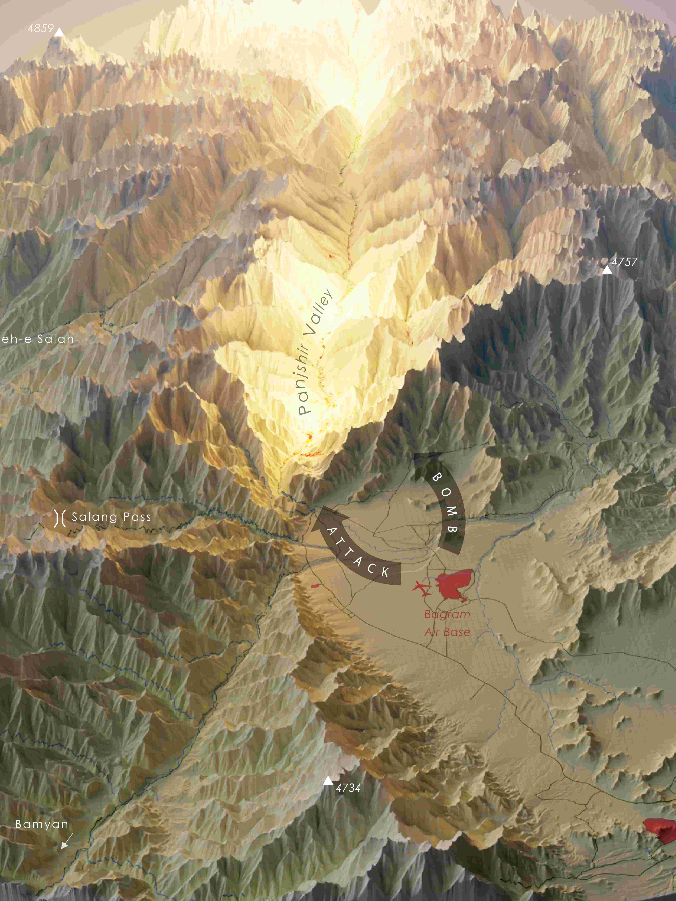

Home
Publications
Cartography
CV
Contact
Publications
Conference abstracts and papers

Detecting Disturbance to Agricultural Productivity from Historical Armed Conflict in Afghanistan: The Panjshir Offensives, 1980-1985
Jeremy Allen
EGU General Assembly 2024, Vienna, Austria
Project Page
EGU Abstract